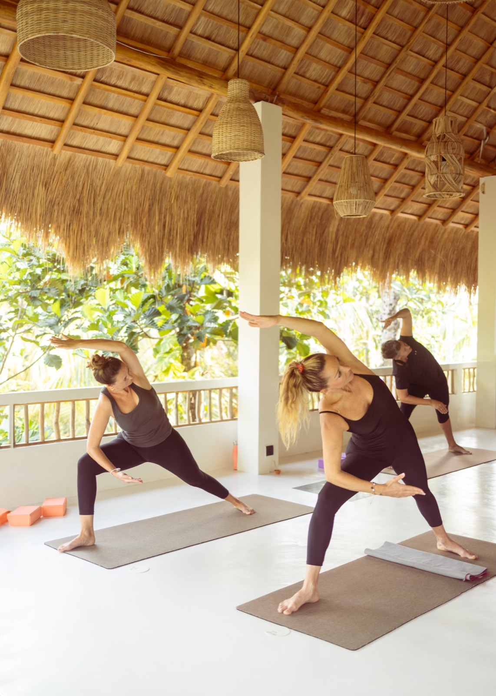
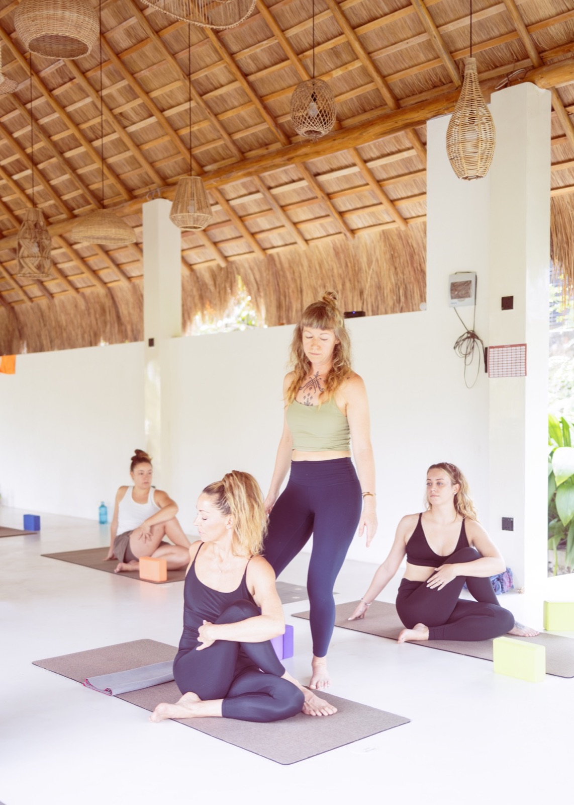

Beide zeigen dieselben Inhalte in zwei unterschiedlichen Handschriften. Sektionen lassen sich zwischen den Layouts tauschen, ihr müsst euch also nicht für ein Paket entscheiden, sondern könnt sagen, was euch aus welchem gefällt.

Layout ADer vertraute Wechsel aus Bild und Text, dazu grosse Bildflächen beim Tagesablauf und der Community.
Ansehen
Layout BAlles mittig, kurze Texte, dazwischen Bildpaare. Am nächsten an einem Magazin.
AnsehenWas noch kommt